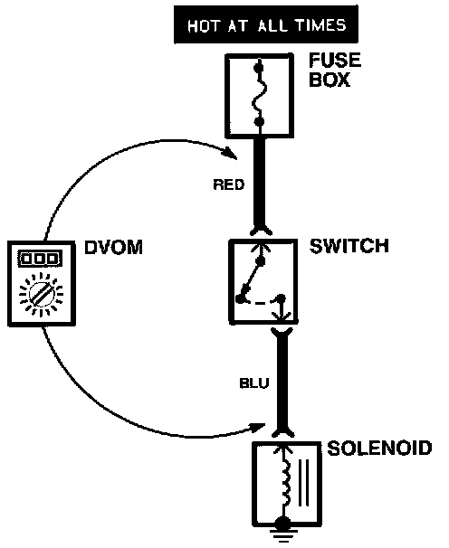

Testing For Voltage Drop
Testing For Voltage Drop:

Wires, connectors, and switches are designed to conduct current with a minimum loss of voltage. A voltage drop of more than one volt indicates a problem.
1. Place the Digital Volt/Ohmmeter (DVOM) in the appropriate DC volts range. Connect the positive lead to the end of the wire (or to the connector or switch) closest to the battery.
2. Connect the negative lead to the other end of the wire (or the other side of the connector or switch).
3. Turn on the components in the circuit.
4. The DVOM will show the difference in voltage between the two points. A difference, or drop, of more than one volt indicates a problem. Check the circuit for loose, dirty, or bent terminals.